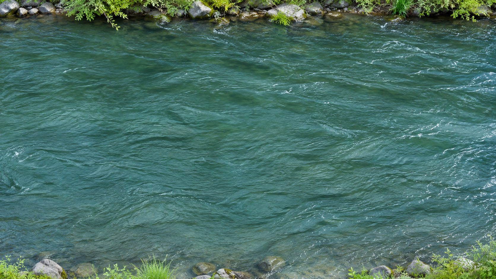
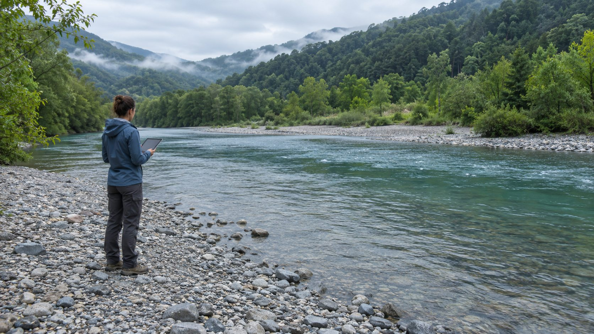
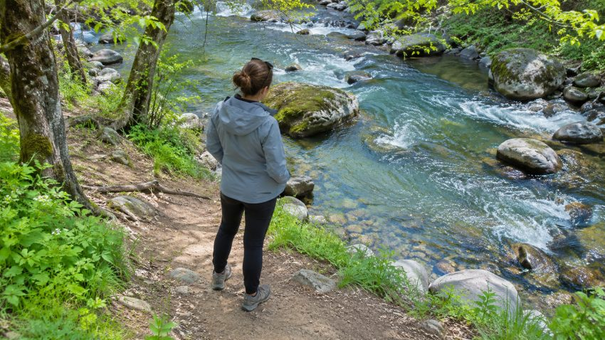

Non-contact
Observe the water’s surface from the bank.
Measure water surface velocity with a tablet.
A new perspective on rivers, streams, and channels.


At the water’s edge
Equipment setup, transport, and access to the water can take time. Flow Pick Tablet brings surface velocity measurement to a familiar device you can carry to the riverbank.
Observe the water’s surface from the bank.
Carry a tablet from one observation point to the next.
Use the tablet’s built-in camera to capture the moving surface.
Interactive demo
Start with one line along the direction of the current. Add two more to see how the demo represents surface velocity along each line.
Use cases
Observe how surface flow varies across a reach of a river or channel.
Connect hydraulics lessons with field observations of surface velocity.

Take a closer look at how water moves through a familiar stream.